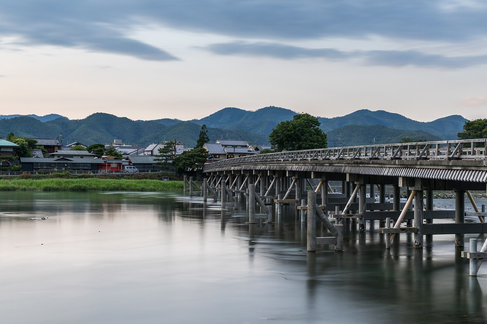
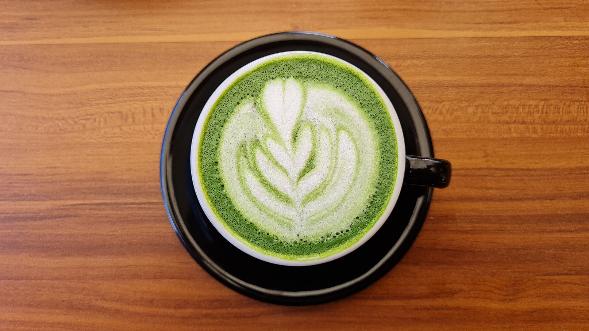

02
嵐山珈琲
弐

10:15 — 11:30

KATSURA RIVERFRONT · SPECIALTY COFFEE
% Arabica Kyoto Arashiyama
SIGNATURE
Kyoto Latte
EST. WAIT
~15-20 นาที
STATION ACCESS
มีลิฟต์ JR
CONCIERGE NOTE
แนะนำสั่ง Hot Kyoto Latte หรือ Matcha Latte แล้วเดินชมวิวสะพานไม้ Togetsukyo ริมน้ำท่ามกลางหุบเขาใบไม้เปลี่ยนสี